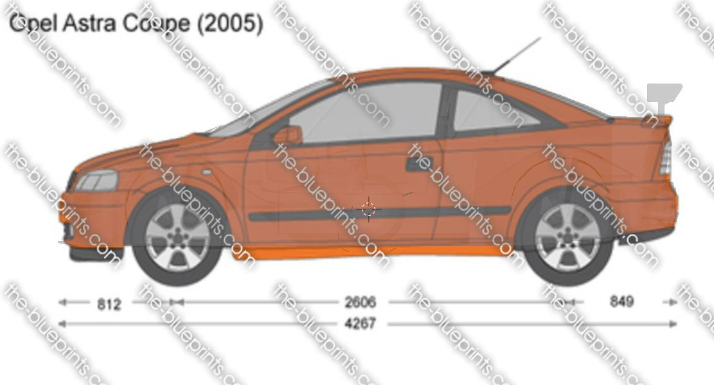

The car comes from 2001, it's really similar to the Astra DTM from races and competitions. This post will talk about the differences between the xtreme and base models since it would be interesting to do a conversion. Any contribution is welcomed
The Opel Astra from the second generation introduced 5 variations, the base model used was the G Coupe, also called Bertone. Blueprints from the-blueprints.com
Here is the Bertone overlayed with the Xtreme.
Bertone: Length x 427cm, Width x 171cm & Height x 139cm
Xtreme: Length x 428cm, Width x 185cm & Height x 128cm
Xtreme Mechanical
Base Mechanical
Xtreme Components
More in depth detail in supercars.net and automobile-catalog.com
The wheels used for the Xtreme are the OPC Y-spoke (also called Opel Snowflake), which can be found usually in the Astra H OPC, Vectra C OPC and Zafira B OPC. Link to a shop, the main difference being the depth of the wheels and the size, the ones on the store are 18" and is more flat but the xtreme's are 20".
The spoiler has 2 layers. I haven't been able to spot any store to be selling a similar one the xtreme has.
Made by Ulli Hochmuth, there's no store that sells this so the only choice in order to get it is to make it ourselves, scroll down and you will find a 3d model to download. Other than that the mirrors are also different
If you're more interested you can download the 3D model to inspect it, the 3D Model was ripped from Blur (2010) from the Gamemodels.ru website
This is a guide on how to convert broken earbuds to MMCX
Requirements:
Tools:
The image below explains in detail, simply soder the ground cable to the "circle" part from the connector, and the hot to the small point in the center, The Red cable is right and red/copper is right-ground. Green is left and green/copper is left-ground